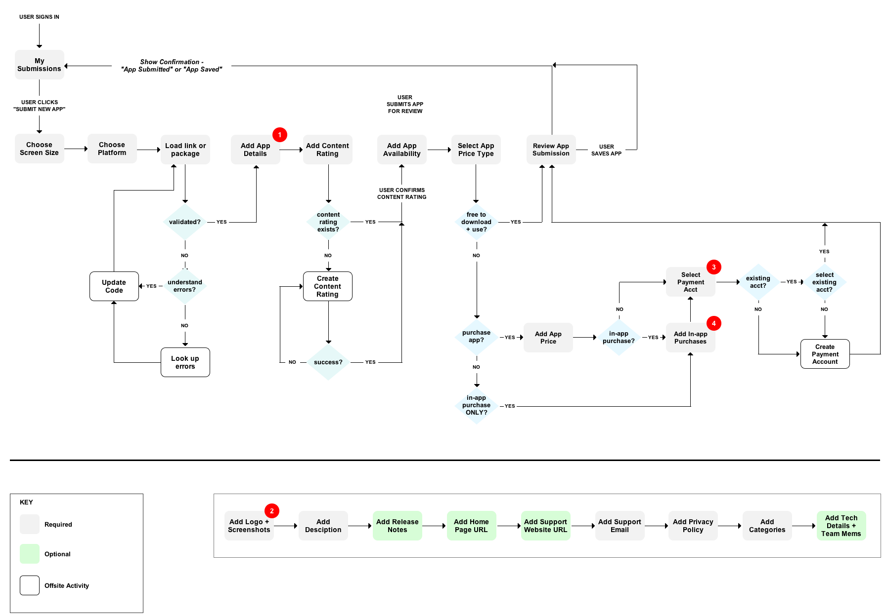

---
layout: MarketplaceUXSpec
multipage: false
---	

<div class="container">
	<div class="row">
		<div class="col-sm-12 col-md-12 col-lg-12">
			<h1>User Flow - Submit an App - Inline Editing model</h1>
			
			<h4><a href="projectIA.html#inline">More info on this model</a></h4>

			<p><a href="javascript: history.go(-1)">&laquo; back</a></p>

			<div class="thumbnail">
				
				
				<br/>
				<p>
					The Submit a New App User Flow ends after the user submits the app for review or after the user saves the app. At that point, the user is returned to the My Submissions page showing that the new app has been added and with the appropriate confirmation message ("saved" or "submitted").
				</p>
				<h3>Notes</h3>
				<ol>
					<li>Sub-steps for App Details flow</li>
					<li>Should developers upload all image sizes at this step? If not, figure out how to get them to add all sizes BEFORE SUBMITTING the app for review.</li>
					<li>Select Payment Account is Required if developer chooses "users must purchase app" or "free to download but users can make in-app purchases.</li>
					<li>Add In-app Purchases is Required if developer chooses "free to download but users can make in-app purchases."</li>
				</ol>
			</div>
		</div>
	</div>
	<!-- Pagination. If you have more than one page, set the multipage variable in the Frontmatter to true. Editing the pagination code happens in /_includes/homePagination.html. 
		NOTE: This is currently broken in the Jekyll ver of this template.
		-->
		{% if page.multipage %}
			{% include homePagination.html %}
		{% endif %}
